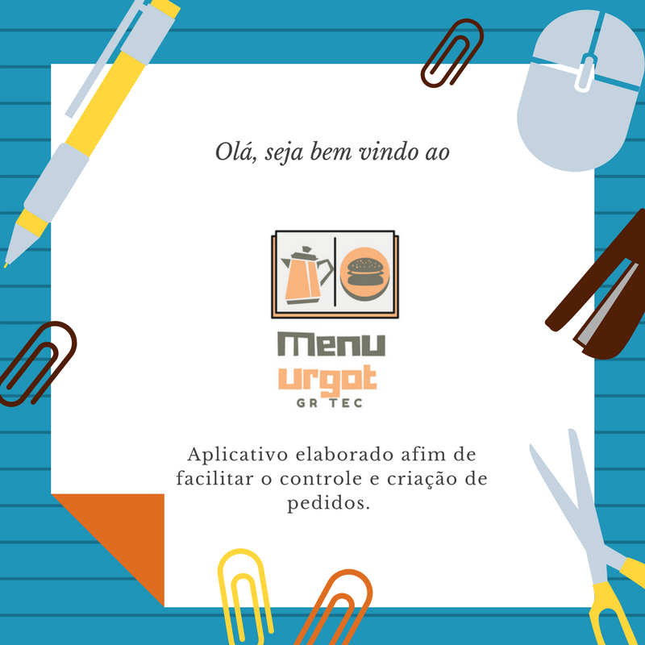
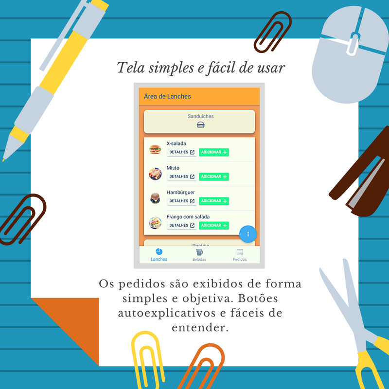
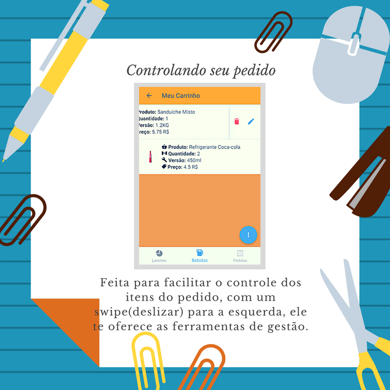
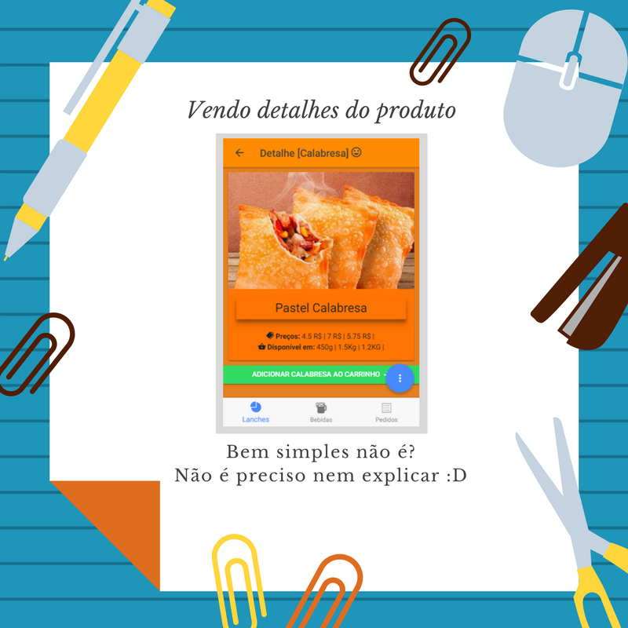

<!--
  Generated template for the SlidePage page.

  See http://ionicframework.com/docs/components/#navigation for more info on
  Ionic pages and navigation.
-->

<ion-header>

  <!--  <ion-navbar>
     <ion-title>home-slide</ion-title>
   </ion-navbar>
  -->
 </ion-header>
 
 
 <ion-content>
   <ion-slides pager>
   <ion-slide style="background-color: #79A7F1">
 
     
     <button ion-button (click)="irAplicativo()" icon-right>
       Skip
       <ion-icon name="exit"></ion-icon>
   </button>
   </ion-slide>
 
   <ion-slide style="background-color: #CB1313">
     
     <button ion-button (click)="irAplicativo()" icon-right color="danger">
       Skip
       <ion-icon name="exit"></ion-icon>
   </button>
   </ion-slide>
 
   <ion-slide style="background-color: #9CEA49">
     
  <button ion-button (click)="irAplicativo()" icon-right color="secondary">
       Skip
       <ion-icon name="exit"></ion-icon>
   </button>
   </ion-slide>
 
   <ion-slide style="background-color: #BFC0B3">
   
  <button ion-button (click)="irAplicativo()" icon-right color="light">
       Skip
       <ion-icon name="exit"></ion-icon>
   </button>
 </ion-slide>
  <ion-slide style="background-color: #FF8C00">
   
    <button ion-button (click)="irAplicativo()" icon-right>
       Ir para o aplicativo
       <ion-icon name="home"></ion-icon>
   </button>
 </ion-slide>
 </ion-slides>
 </ion-content>
 

<!--<ion-content padding>

  <ion-slides pager>

    <ion-slide class="slide_image">
      
      <h2><strong>Seja Bem-vindo ao MENU URGOT</strong></h2>
      <div>
        <p>
          Esta aplicação será de grande <strong>Benefício</strong>, com uma <strong>interfase prática</strong>, a <strong>administração de serviços</strong> será feita da forma mais fácil o possível.
        </p>
        <p>
          <strong>Quer Saber mais?</strong> Continue Rolando as páginas para mais informações.
        </p>
      </div>
    </ion-slide>

    <ion-slide class="slide_image">
       
      <h2>Layout e Funções</h2>
       <div>
        <p>
          Nossas Funções e Layout procurão sempre atender a todas os tipos de usuários, ajudando sempre da forma mais simples o possível aqueles que utlizarão nossa aplicação.
        </p>
      </div>

    </ion-slide>

    <ion-slide class="slide_image">
      
      <h2>Finalmente chegamos aqui.</h2>
         <div>
        <p>
         Nós da <strong>GR TEC</strong> Esperamos atender da melhor forma possível, e que nossa aplicação seja de grande ajuda para você, <strong>Sem Mais Enrolação!!!</strong>
      </p>
      </div>
       <a (click)="goToSigninPage()"> Lets bora para a Aplicação?!</a>
      <!--<a (click)="goToTabsPage()">Lets bora para a Aplicação?!</a>-->
        <!--<a (click)="goToHomePage()">Lest bora Criar uma conta?!</a>-->
  <!--</ion-slide>-->

  <!--</ion-slides>

</ion-content>-->